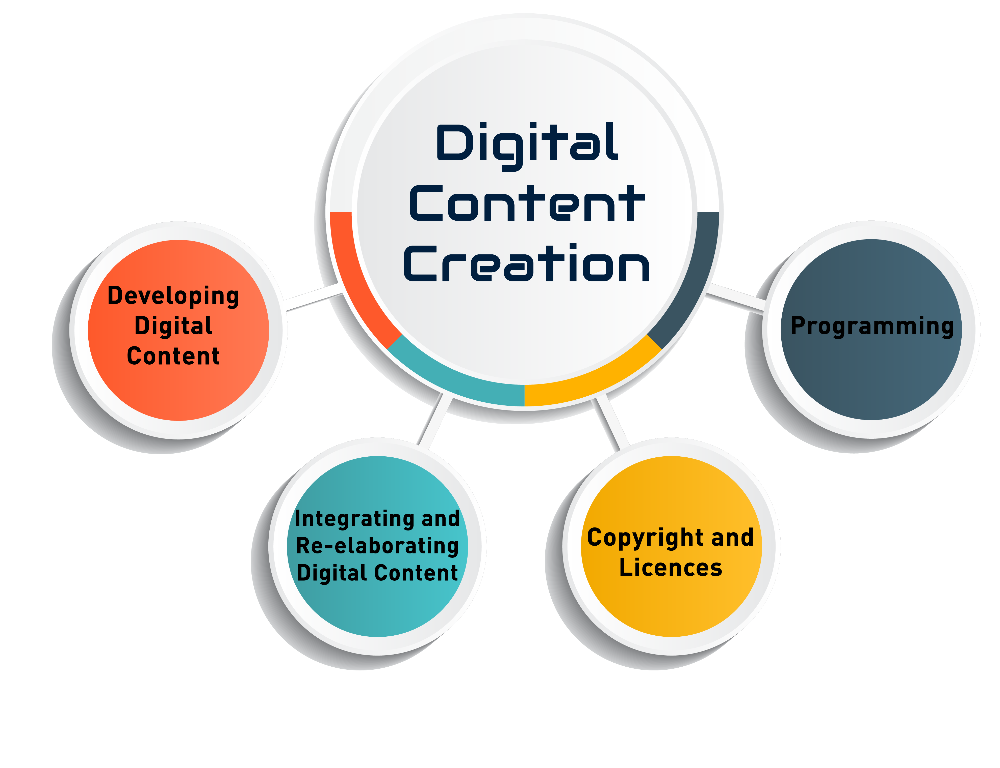
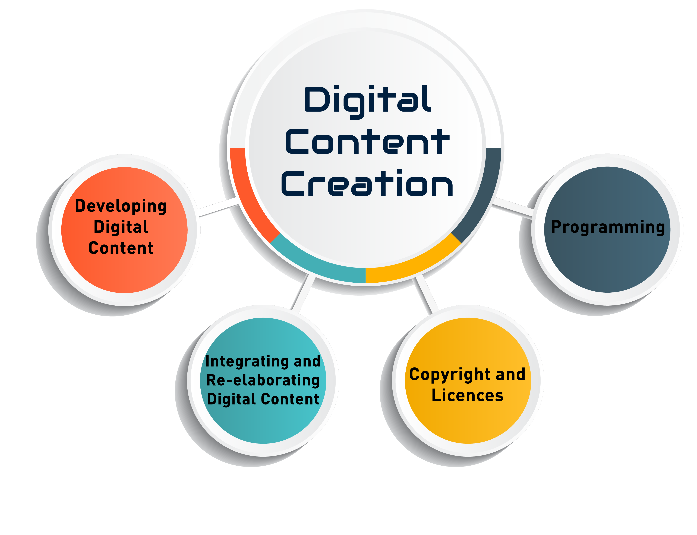

Future Career Aspiration - Becoming a Digital Content Creator
 

Loving what I do guides the choices I make. I can't go off just what others believe, you see. The future? I see myself as a Digital Content Creator; that's what I dream. It's a product of my love for creativity, as I mentioned in the hobby section. Technology? Yes, that's right; it relates well to the career I've chosen. You know what? Mixing my love for art, video production, and digital media with technical skills from Information Technology - that'd be something.
Crafting multimedia content and sharing knowledge from my own experiences, there's a chance for creative expression in platforms like YouTube, Instagram, blogs, Facebook, or even TikTok - In a few years, I'll be still learning the technicalities, and all that is covered with the skills. You see, these platforms are great; in a future context, I would probably get to navigate them with all the appropriate digital tech skills. It simply excites me when I imagine! As a Digital Content Creator, the thought is infused with my love for art and video production - things I've been doing. Even though I don't run within the realm of expertise yet, I'm learning bit by bit! This career of Digital Content Creation, where creativity's significance is evident, has a strong match with my tech aspirations from an Information Technology context. It's beautiful in a way. Everything is yet to come, looking at the broader picture.
Skills and Platforms for Digital Content Creation
| Skill | Platform | Content Type |
|---|---|---|
| Video Editing | YouTube | Tutorials, Vlogs |
| Graphic Design | Digital Art, Infographics | |
| Web Development | Personal Blog | Articles, Guides |
| Programming | GitHub, YouTube | Coding Tutorials, Projects |
Me, Becoming a Digital Content Creator?
Everyone needs to work for what they want, isn't it? Otherwise, it will be meaningless. Following are some few things I want to do as a digital content creator:
-
Combining Creativity and Technology
As a Digital Content Creator, I will have the chance to use both my creative talents and my IT skills to produce engaging content. Digital media comes into play here, illustrative of my capabilities in combining creativity and technology, varied and diverse, from coding tutorials and videos to digital art and blog musings. This career path affords me the opportunity to create educational, entertaining, or possibly inspiring content for an audience; perhaps it will be through tech tutorials, perhaps through digital creative projects, or perhaps by displaying new tech solutions and tools.
-
Connecting Across Continents
The beauty of being a Digital Content Creator is that I can share my work with a global audience. Mediums like YouTube, Instagram, plus blogs conveniently break geographical barriers for me; they assist in broadcasting from my passion pool of technology, creativity, and artistry to the world, while also assisting in setting up a rendezvous with people of like-mindedness. My techy and creative excitement content are opened up thanks to these mediums. They can stir up a resonance with other enthusiasts, giving rise to a mingling of ideas and creative unions.
-
Exploring Video Production and Tutorials
I am particularly interested in creating tutorial videos and blog posts that explain complex technical topics in an engaging and understandable way. This could include coding tutorials, tech reviews, or step-by-step guides for using design software or creative tools. My IT background will give me the technical expertise to create content that’s not only informative but also technically accurate, helping viewers or readers learn new skills efficiently.
-
Developing a Personal Brand and Portfolio
As a Digital Content Creator, I would focus on developing a personal brand that represents my unique blend of technology and creativity. By producing high-quality content regularly, I would build a portfolio that demonstrates my versatility as a creator and my deep understanding of technology. This would serve as a foundation for future opportunities, whether that’s working with brands, creating sponsored content, or even developing my own online courses to teach others.
-
Flexibility and Independence
One of the aspects that excites me most about becoming a Digital Content Creator is the flexibility it offers. I can create content on my own schedule, work independently, and focus on topics I am passionate about—whether that’s digital art, web development, or technology trends. This career path would allow me to explore different types of content, from educational tech tutorials to creative digital artwork, all while building an audience that values both creativity and technical knowledge.
-
Continuous Learning and Adapting to New Trends
In this constantly evolving field, I’ll need to stay up to date with the latest trends in technology, design tools, and digital content creation techniques. My IT background will enable me to quickly adapt to these changes and produce content that remains relevant and engaging.